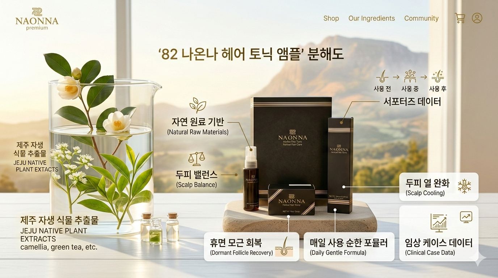

82나온나는 자연 원료 기반 두피케어를 전면에 내세웁니다. 휴면 모근이 스스로 회복할 수 있는 최적의 환경을 조성하는 데 집중합니다.
신제품 ‘헤어 토닉 앰플’은 서포터즈 프로그램을 통해 3개월간의 사진과 솔직 리뷰를 요구합니다. 이는 임상·케이스 스터디 데이터 풀을 구축하려는 의도를 분명히 보여줍니다.
자연 유래 추출물, 두피 진정, 탈모 완화 등 검증된 수사법과 함께 두피 열 완화, 자극 최소화, 매일 사용 가능한 순한 포뮬러를 통해 니치 시장을 정조준합니다.
기존 대형 브랜드와 유사한 포지션을 채택하면서도, 데이터와 자연주의를 결합한 치밀한 전략은 이 제품을 가장 가치 있는 신생 로컬 브랜드로 정의합니다.